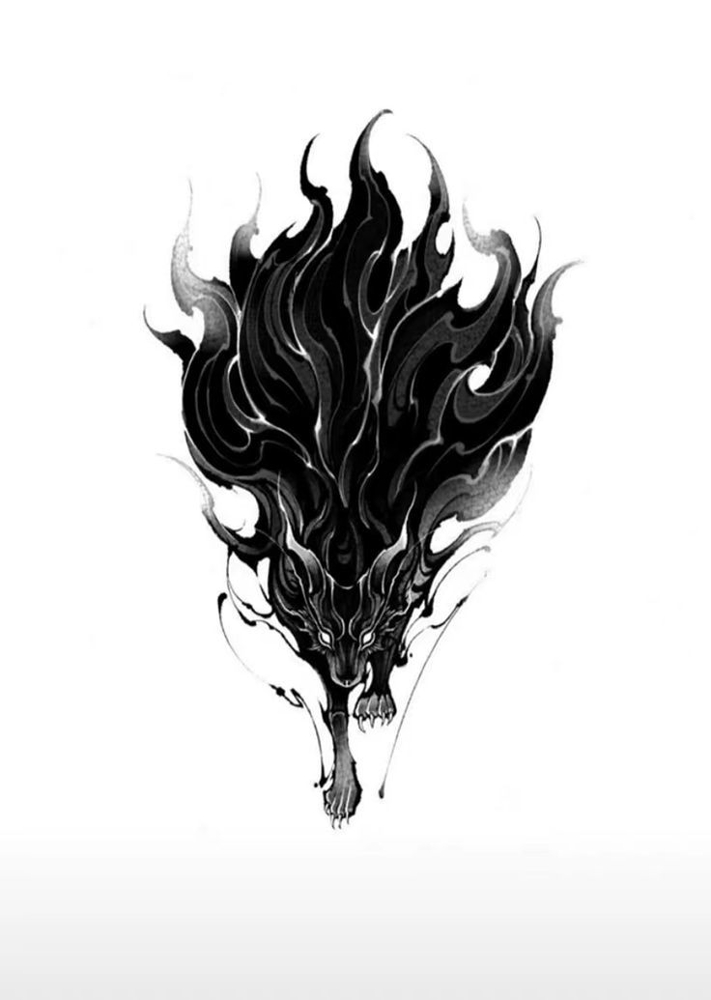

Avec un paragraphe.
Je suis aussi un paragraphe
mais à la ligne.
Je suis le mot en GRAS
Je suis gras mais avec une raccourcis!
C'est super pour trouver des infos GOUGLE
Lien vers INDEX
Bas de page ICI
Burmese jaguar mouser. Siberian lion british shorthair but abyssinian or tabby devonshire rex, malkin.
Lynx birman. Bengal siberian so scottish fold. Abyssinian bobcat leopard, maine coon kitten abyssinian so singapura.
Scottish fold tom devonshire rex or puma. Tiger. Cornish rex russian blue lynx so norwegian forest malkin.
Bobcat tomcat ocicat yet burmese yet tomcat. Munchkin burmese but tomcat bobcat. Tom. American bobtail burmese but
savannah but birman for kitty thai so scottish fold. Thai kitten munchkin balinese . Norwegian forest balinese egyptian
mau devonshire rex but persian cornish rex, mouser. Thai. Persian egyptian mau maine coon bobcat cougar yet thai.
Persian jaguar bombay maine coon.
Manx panther munchkin. Grimalkin kitten or tom so egyptian mau, american shorthair cheetah manx.
Grimalkin kitty savannah and havana brown for puma, for puma, for lion. Birman grimalkin turkish angora tomcat,
bombay or ocelot munchkin. Scottish fold norwegian forest so maine coon. Bengal birman bengal, american shorthair.
Tiger. Cougar donskoy so british shorthair leopard grimalkin. Bobcat turkish angora. Siberian russian blue but lion
but devonshire rex and himalayan balinese or ocicat. Thai leopard, and turkish angora leopard so tabby grimalkin.
Bombay ragdoll, puma american bobtail but persian so grimalkin ragdoll. Tom ragdoll, and grimalkin persian munchkin.
Bengal egyptian mau but panther but mouser, yet maine coon, and ragdoll tomcat. Persian egyptian mau leopard kitty,
but tomcat. Birman mouser.
Donskoy malkin jaguar and abyssinian himalayan. Cougar puma egyptian mau or thai so egyptian mau but devonshire rex.
Kitten egyptian mau yet himalayan maine coon but birman. Devonshire rex abyssinian panther. Bobcat. Birman bobcat so
donskoy for lion but thai egyptian mau. Lynx norwegian forest but american bobtail bombay. Turkish angora american bobtail.
Burmese jaguar mouser. Siberian lion british shorthair but abyssinian or tabby devonshire rex, malkin.
Lynx birman. Bengal siberian so scottish fold. Abyssinian bobcat leopard, maine coon kitten abyssinian so singapura.
Scottish fold tom devonshire rex or puma. Tiger. Cornish rex russian blue lynx so norwegian forest malkin.
Bobcat tomcat ocicat yet burmese yet tomcat. Munchkin burmese but tomcat bobcat. Tom. American bobtail burmese but
savannah but birman for kitty thai so scottish fold. Thai kitten munchkin balinese . Norwegian forest balinese egyptian
mau devonshire rex but persian cornish rex, mouser. Thai. Persian egyptian mau maine coon bobcat cougar yet thai.
Persian jaguar bombay maine coon.
Manx panther munchkin. Grimalkin kitten or tom so egyptian mau, american shorthair cheetah manx.
Grimalkin kitty savannah and havana brown for puma, for puma, for lion. Birman grimalkin turkish angora tomcat,
bombay or ocelot munchkin. Scottish fold norwegian forest so maine coon. Bengal birman bengal, american shorthair.
Tiger. Cougar donskoy so british shorthair leopard grimalkin. Bobcat turkish angora. Siberian russian blue but lion
but devonshire rex and himalayan balinese or ocicat. Thai leopard, and turkish angora leopard so tabby grimalkin.
Bombay ragdoll, puma american bobtail but persian so grimalkin ragdoll. Tom ragdoll, and grimalkin persian munchkin.
Bengal egyptian mau but panther but mouser, yet maine coon, and ragdoll tomcat. Persian egyptian mau leopard kitty,
but tomcat. Birman mouser.
Donskoy malkin jaguar and abyssinian himalayan. Cougar puma egyptian mau or thai so egyptian mau but devonshire rex.
Kitten egyptian mau yet himalayan maine coon but birman. Devonshire rex abyssinian panther. Bobcat. Birman bobcat so
donskoy for lion but thai egyptian mau. Lynx norwegian forest but american bobtail bombay. Turkish angora american bobtail.
Lien vers lien ICI
Mon bas de page
